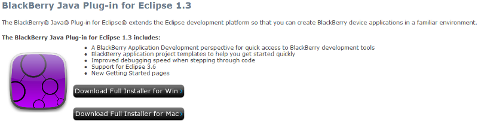
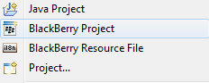
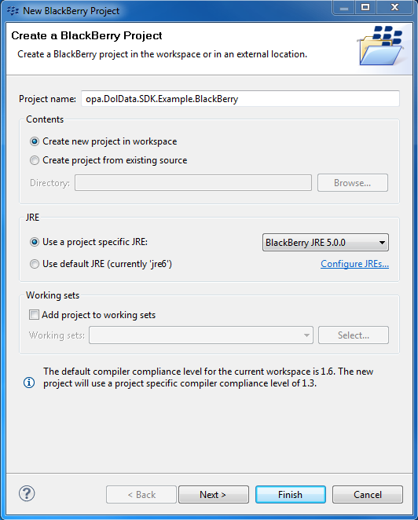
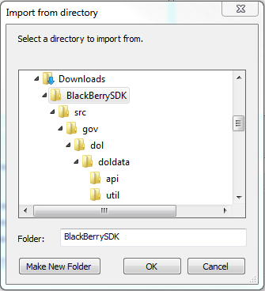
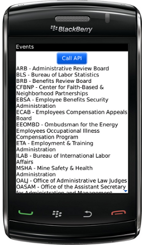
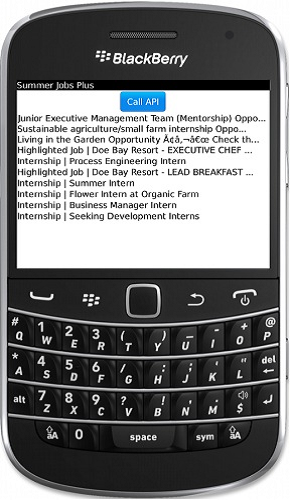

BlackBerry DOL Data SDK Sample
Overview
This sample will provide the steps to create a simple BlackBerry application that can consume Government Entity Data.
Following these steps in order will allow your application to operate correctly.
Download this project
This solution was built using:
- Eclipse JEE Helio SR2 windows 32
- JDK
- BlackBerry SDK
- BlackBerry JRE 5.0.0 - The BlackBerry JRE is included in the BlackBerry SDK. This is the JRE version this application will need to build correctly.
Download BlackBerry SDK
Installation instructions are provided in detail here to setup a BlackBerry development environment.
After installation it is important to follow the steps for installing plug-in updates and additional components. This page will be visible in the Eclipse startup screen.

Create a New Project
For this sample we are going to create a new BlackBerry application that will consume and list Agency data.
Start by creating a new workspace or selecting a workspace of your choice.
Then open a new project by Clicking File > New Project > BlackBerry Project.

You will need to provide information in order to proceed.
- Choose a project name; this will be displayed as the root item in your project.
For this project, BlackBerry JRE 5.0.0 platform has been used.
Currently BlackBerry JRE 6.0.0 and 7.0.0 are not supported.

Add SDK to Project
All requests require account credentials to be submitted along with the request.
This SDK contains a few classes needed to process service requests.
This package needs to be imported into your project. You can grab the Git repository.

Import the BlackBerry_GOVDataSDK into your project using the General > File System option.

Choose the root path and click ok.

Locate the Dataset Path
Each Dataset has a Dataset Location path that gives the URL that will be needed to reach the Dataset on the API. For this sample please we're using http://api.dol.gov/V1/DOLAgency.

For the DOL Service Operation sample please use http://api.dol.gov/V1/SummerJobs.
Define the User Interface
BlackBerry allows developers to add UI Components to the main screen programmatically.
By Creating a ButtonField member variable in this application, users will be able to invoke a call to the DOL Data API.
We will implement the FieldChangeListener to handle the button click events.
We will also implement the GOVDataRequestCallBack to handle request made to the DOL Data API.
public final class GOVDataMainScreen extends MainScreen implements FieldChangeListener, GOVDataRequestCallBack
/**
* Creates a new DolDataMainScren object
*/
// You will need to supply your own key and secret.
public final String API_KEY = "";
public final String SHARED_SECRET = "";
public final String API_URI = "V1";
public final String API_HOST = "http://api.dol.gov";
public final String API_DATA = "DOLAgency/Agencies";
The example above uses DOL's API. Some federal APIs' URLs are structured differently. For example, let's look at http://business.usa.gov/api/article/xml
- API_LOGIN = ""
- API_KEY = ""
- SHARED_SECRET = ""
- API_HOST = "http://business.usa.gov"
- API_URI = "/api"
- API_DATA = "/article/xml"
Let's look at the Census Bureau. For example, http://api.census.gov/data/2010/acs5?key={your key}&get=B02001_001E,NAME&for=state:06,36
- API_LOGIN = ""
- API_KEY = "key={your key}"
- API_SECRET = ""
- API_Host = "http://api.census.gov"
- API_URI = "/data"
- API_DATA = "/2010/sf1"
Implementation for initializing this button is placed in the class constructor to be executed only once.
//GOV Data Context object
private GOVDataContext context;
private ButtonField submitButton;
public GOVDataMainScreen()
{
//Instantiate GOV Data context object
//This object stores the API information required to make requests
context = new GOVDataContext(API_KEY, SHARED_SECRET, API_HOST, API_URI,API_LOGIN, API_DATA);
// Set the displayed title of the screen
setTitle(“Events”);
//Create the search button. Add click event. Center it.
submitButton = new ButtonField(“Call API”,ButtonField.CONSUME_CLICK | ButtonField.FIELD_CENTER);
//Set delegate for button presses to be the same class (this)
//It will trigger “public void vieldChanged(Field field, int context” when pressed
submitButton.setChangeListener(this);
//Add the search button
add(submitButton);
}Implementing the GOV Data Request
DOL Data Request logic has been placed in the fieldChanged method to respond to the button's click event.
The String method variable represents the Dataset and the table portion of the Data location path.
-Format( Dateset/Table) i.e. "DOLAgency/Agencies", "FORMS/AgencyFormsTable", "FAQ/Topics", "FAQ/SubTopics".
*Please Note: these paths are case sensitive, please refer to the corresponding Datasets for the correct formats.
For DOL API dataset :
public void fieldChanged(Field arg0, int arg1) {
//Update the status field to give user feedback of what is occurring (searching)
LabelField status = new LabelField(“Searching...”,LabelField.ELLIPSIS | LabelField.USE_ALL_WIDTH);
setStatus(status);
//Catch any exceptions
try
{
//Instantiate new request object. Pass the context ivar that contains all the API key info
GOVDataRequest request = new GOVDataRequest(this, context);
String method = API_DATA;
Hashtable args = new Hashtable(2);
args.put(“top”, “20”);
//args.put(“filter”, “CURRENT_MINE_NAME eq ‘Rockwood Mine’”);
request.callAPIMethod(method, args);
}
catch (Exception e) {
//Alert the user that an error occurred
Dialog.alert(e.getMessage());
//Clear status bar
setStatus(null);
}
}For DOL service operation :
public void fieldChanged(Field arg0, int arg1) {
//Update the status field to give user feedback of what is occurring (searching)
LabelField status = new LabelField("Searching...",LabelField.ELLIPSIS | LabelField.USE_ALL_WIDTH);
setStatus(status);
//Cacth any exceptions
try
{
//Instantiate new request object. Pass the context ivar that contains all the API key info
GOVDataRequest request = new GOVDataRequest(this, context);
String method = API_DATA;
Hashtable args = new Hashtable(7);
args.put("format", "'json'");
args.put("query", "'farm'");
args.put("region", "");
args.put("locality", "");
args.put("skipCount", "1");
request.callAPIMethod(method, args);
}
catch (Exception e) {
//Alert the user that an error has occurred
Dialog.alert(e.getMessage());
//Clear status bar
setStatus(null);
}
}The results from the request are implemented in the GOVDataResultsCallBack method. The request results of the DOL Data API are iterated through and a label is created for each item in the list. We also have the GOVDataResultsCallbackText method when the SDK fails to parse the returned data.
For DOL API dataset :
public void GOVDataResultsCallback(Vector results) {
for (int i = 0; i < results.size(); i++) {
Hashtable record = (Hashtable)results.elementAt(i);
LabelField l = new LabelField(record.get(“Agency”)+” - “+record.get(“AgencyFullName”),FOCUSABLE);
add(l);
}
//Clear status bar
setStatus(null);
}
public void GOVDataResultsCallbackText(String results) {
LabelField l = new LabelField(results);
add(l);
//Clear status bar
setStatus(null);
}For DOL service operation:
public void GOVDataResultsCallback(Vector results) {
//Create JSON object and JSONArray to store the data from DOL service operation
JSONObject jsonObject = null;
JSONArray subArray = null;
//Iterate through list of results. Add each field to the display list.
for (int i = 0; i < results.size(); i++) {
try {
if(null != results.elementAt(i))
{
Hashtable record = (Hashtable)results.elementAt(i);
//Look for value of getJobsListing property.
if(record.get("getJobsListing") != null)
{
String jobs = record.get("getJobsListing").toString();
//Cleanup json result
jobs = replaceAll(jobs, "\\n", "");
jobs = replaceAll(jobs, "\\\", "\"");
jobs = replaceAll(jobs, "\"{", "{");
jobs = replaceAll(jobs, "}\"", "}");
//convert jString to the jObject
//start extracting the content from jObject
jsonObject = new JSONObject(jobs);
if(null!=jsonObject)
{
//Look for an array of "item"
subArray = jsonObject.getJSONArray("items");
if(null!=subArray)
{
//Let's loop through each job
for(int j=0; j < subArray.length(); j++)
{
//get the job title
String str = subArray.getJSONObject(j).getString("title");
LabelField l = new LabelField(subArray.getJSONObject(j).getString("title"),FOCUSABLE);
add(l);
}
}
}
}
}
} catch (JSONException e) {
e.printStackTrace();
}
}
setStatus(null);
}Requests resulting in error, are sent to the GOVDataErrorCallBack method with information pertaining to the error.
public void(GOVDataErrorCallback(String error) {
Dialog.alert(error);
//Clear status bar
setStatus(null);
}Run the Application
If you are not using a BlackBerry device, you will need to run this application in the Simulator.
Press F11 or Run > Debug to run this application in debug mode. You will be prompted to choose either a BlackBerry Device or Simulator.
When the Simulator is fully active, goto the Downloads icon in the menu and click on the application to run.
A list of Agencies should be displayed on the screen.
For DOL API dataset :

For DOL service operation :
